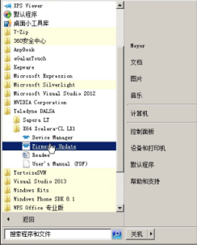
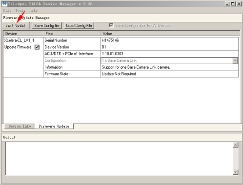
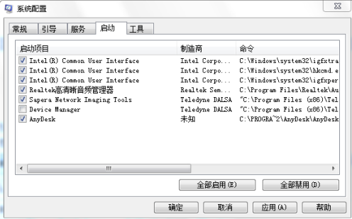

注意：新安装驱动前，先把之前的dalsa驱动按照上图中位置找到卸载掉！再重新安装
一、32位操作系统解决方法
第一步先分别安装下图两个文件夹里的exe。

在哪里下载？（https://meyerxray.github.io/）请进入X光产品线技术支持网站软件驱动中可以直接下载。
第二步关闭下图中的服务。

第三步更新插件。

（1）点击“开始”—“所有程序”，找到并打开“Fireware update

（2）点击“Manual”

（3）点击“tart update”
二、64位操作系统解决方法
按下图顺序依次安装如下文件

在哪里下载？（https://meyerxray.github.io/）请进入X光产品线技术支持网站软件驱动中可以直接下载。
安装方式：双击打开如下图“exe”

关闭服务
打开“控制面板”—“管理工具”，找到“系统配置”后点击“启动”，取消勾选“Device Manager”，后点击“确定”。

更新插件
此操作同32位操作系统